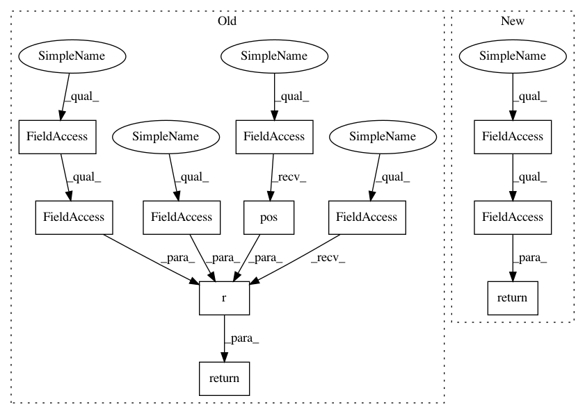

4b8dec5e7199ad302c52bf9eb6914a170491334c,acoular/fbeamform.py,BeamformerBase,_get_rm,#BeamformerBase#,190
Before Change
@property_depends_on("digest")
def _get_rm ( self ):
return self.env.r( self.c, self.grid.pos(), self.mpos.mpos)
@property_depends_on("ext_digest")
def _get_result ( self ):
After Change
return self.steer_obj.r0
def _get_rm(self):
return self.steer_obj.rm
def _set_c(self, c):
self.steer_obj.c = c
In pattern: SUPERPATTERN
Frequency: 5
Non-data size: 11
Instances
Project Name: acoular/acoular
Commit Name: 4b8dec5e7199ad302c52bf9eb6914a170491334c
Time: 2018-05-03
Author: tom.j.gensch@campus.tu-berlin.de
File Name: acoular/fbeamform.py
Class Name: BeamformerBase
Method Name: _get_rm
Project Name: acoular/acoular
Commit Name: 276f8fc3fe9a7424bae6585ed4453190e2a70815
Time: 2018-05-02
Author: tom.j.gensch@campus.tu-berlin.de
File Name: acoular/fbeamform.py
Class Name: PointSpreadFunction
Method Name: _get_rm
Project Name: acoular/acoular
Commit Name: 4b8dec5e7199ad302c52bf9eb6914a170491334c
Time: 2018-05-03
Author: tom.j.gensch@campus.tu-berlin.de
File Name: acoular/fbeamform.py
Class Name: PointSpreadFunction
Method Name: _get_rm
Project Name: acoular/acoular
Commit Name: 276f8fc3fe9a7424bae6585ed4453190e2a70815
Time: 2018-05-02
Author: tom.j.gensch@campus.tu-berlin.de
File Name: acoular/fbeamform.py
Class Name: BeamformerBase
Method Name: _get_rm
Project Name: acoular/acoular
Commit Name: 52045c6acff8254112ee227692d0d282195abba3
Time: 2018-07-10
Author: tom.j.gensch@campus.tu-berlin.de
File Name: acoular/tbeamform.py
Class Name: BeamformerTime
Method Name: _get_rm